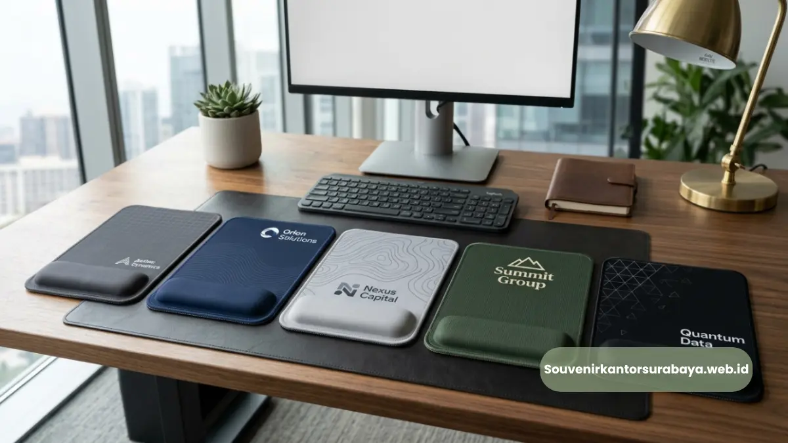
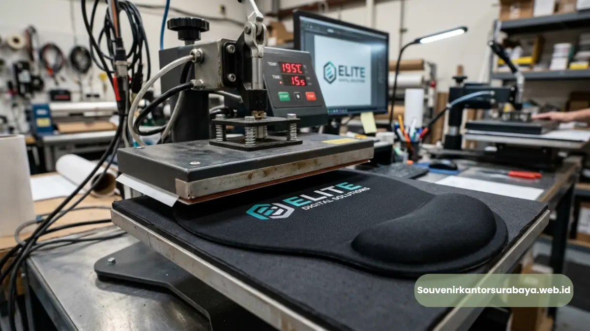
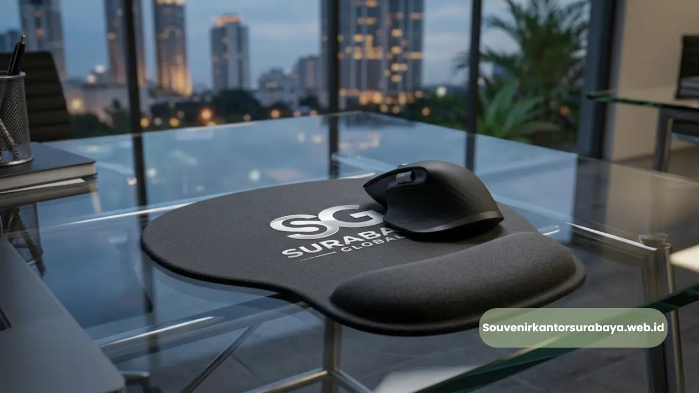
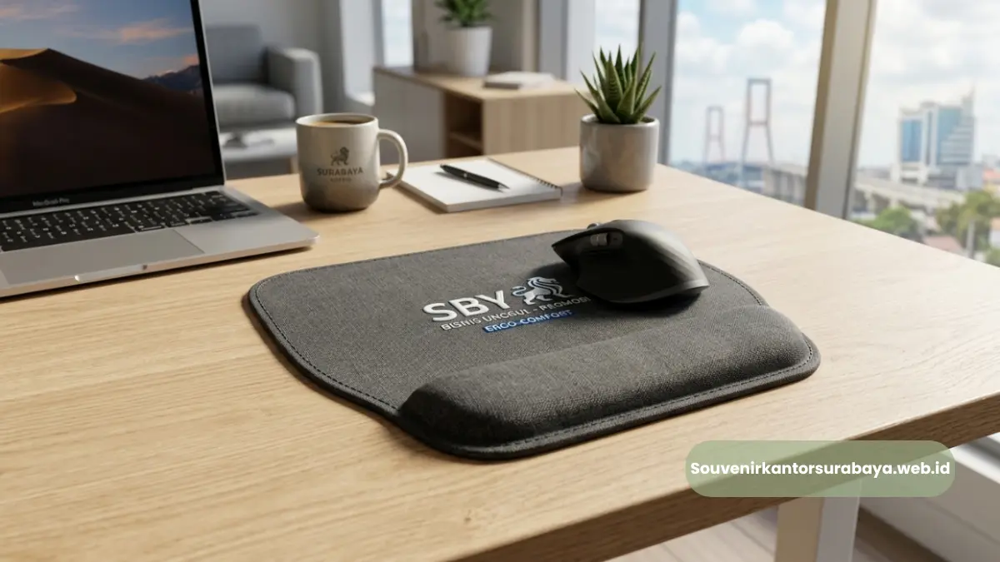

Proses custom logo mouse pad ergonomis perusahaan sebagai souvenir korporat profesional dan eksklusif di Surabaya.
- Bagaimana Proses Custom Logo pada Mouse Pad Ergonomis
- Berapa Lama Waktu yang Dibutuhkan untuk Proses Desain hingga Approval
- Apa Saja Teknik Cetak Logo yang Tersedia untuk Mouse Pad Ergonomis
- Apa Saja yang Perlu Disiapkan Sebelum Memesan Custom Logo Mouse Pad Ergonomis
- Bagaimana Memastikan Hasil Custom Logo Sesuai dengan Identitas Brand
Mouse pad ergonomis custom logo untuk perusahaan adalah proses penyesuaian desain mouse pad, termasuk warna, bentuk, dan cetakan logo perusahaan, agar sesuai dengan identitas visual brand sekaligus tetap mempertahankan fungsi wrist rest yang ergonomis.
Proses ini memungkinkan perusahaan menghadirkan souvenir kantor yang unik dan tidak pasaran, berbeda dari mouse pad polos yang dijual secara umum. Penggunaan custom logo pada mouse pad ergonomis menjadi langkah penting agar souvenir benar-benar merepresentasikan identitas perusahaan secara profesional dalam berbagai kegiatan promosi maupun apresiasi karyawan di Surabaya.
- Custom logo memungkinkan mouse pad ergonomis merepresentasikan identitas brand secara utuh.
- Teknik cetak sublimasi umum digunakan untuk hasil logo yang tajam dan tahan lama.
- Proses custom logo meliputi konsultasi desain, approval, hingga produksi massal.
- Warna dan bentuk mouse pad dapat disesuaikan dengan panduan brand perusahaan.
- Souvenir Kantor Surabaya membantu proses desain hingga produksi secara menyeluruh.
Bagaimana Proses Custom Logo pada Mouse Pad Ergonomis
Proses custom logo pada mouse pad ergonomis dimulai dari konsultasi kebutuhan desain, penyesuaian logo dan warna sesuai brand guideline perusahaan, hingga proses cetak menggunakan teknik yang sesuai dengan bahan permukaan mouse pad.
Tahapan umum yang biasa dilalui meliputi pengumpulan file logo dalam format vektor agar hasil cetak tetap tajam, penentuan posisi logo pada permukaan mouse pad, pembuatan preview desain untuk persetujuan, dan proses produksi setelah desain final disepakati. Tahapan ini penting untuk memastikan hasil akhir sesuai dengan ekspektasi dan identitas visual perusahaan.
Baca Juga
Berapa Lama Waktu yang Dibutuhkan untuk Proses Desain hingga Approval
Waktu yang dibutuhkan untuk proses desain hingga approval bervariasi tergantung kompleksitas logo dan jumlah revisi yang diperlukan, sehingga sebaiknya proses ini dimulai jauh sebelum tanggal acara atau kebutuhan distribusi souvenir.
Apa Saja Teknik Cetak Logo yang Tersedia untuk Mouse Pad Ergonomis
Teknik cetak logo yang umum tersedia untuk mouse pad ergonomis meliputi cetak sublimasi, cetak digital printing, dan emboss pada bagian tertentu seperti wrist rest berbahan PU leather.
Cetak Sublimasi
Cetak sublimasi bekerja dengan cara meresapkan tinta ke dalam serat kain permukaan mouse pad menggunakan panas, sehingga hasil cetakan menyatu dengan bahan dan tidak mudah pudar meski sering digunakan dan dibersihkan.
Teknik ini paling umum digunakan untuk mouse pad berbahan kain microfiber karena mampu menghasilkan warna logo yang tajam dan detail.
Digital Printing
Digital printing digunakan untuk kebutuhan cetak logo dengan warna kompleks atau gradasi, cocok untuk desain logo yang membutuhkan detail visual lebih tinggi dibanding cetak sablon konvensional.
Emboss pada Bahan Kulit Sintetis
Untuk mouse pad ergonomis dengan wrist rest berbahan PU leather atau kulit sintetis, teknik emboss dapat digunakan untuk mencetak logo secara timbul, memberikan kesan lebih premium dan elegan dibanding cetak datar biasa.

Contoh ide desain mouse pad ergonomis custom logo untuk souvenir kantor di Surabaya.
Apa Saja yang Perlu Disiapkan Sebelum Memesan Custom Logo Mouse Pad Ergonomis
Hal yang perlu disiapkan sebelum memesan custom logo mouse pad ergonomis meliputi file logo dalam format vektor, panduan warna brand perusahaan, jumlah pesanan, serta timeline kebutuhan produk sebelum acara atau distribusi berlangsung.
Beberapa poin persiapan yang perlu diperhatikan tim procurement atau marketing perusahaan:
- Menyiapkan file logo resmi perusahaan dalam format vektor seperti AI, EPS, atau PDF.
- Menentukan kode warna brand secara spesifik agar hasil cetak konsisten.
- Memastikan jumlah pesanan sesuai kebutuhan distribusi, baik internal maupun eksternal.
- Menetapkan tenggat waktu produksi dengan mempertimbangkan waktu desain, approval, dan pengiriman.
Bagaimana Memastikan Hasil Custom Logo Sesuai dengan Identitas Brand
Cara memastikan hasil custom logo sesuai dengan identitas brand adalah dengan melakukan review desain preview secara detail sebelum proses produksi massal dimulai, termasuk memeriksa kesesuaian warna, posisi logo, dan proporsi ukuran pada permukaan mouse pad.
Perusahaan disarankan untuk meminta contoh mock up digital terlebih dahulu sebelum menyetujui produksi dalam jumlah besar, guna menghindari kesalahan cetak yang dapat memengaruhi kesan profesional souvenir yang akan dibagikan kepada karyawan maupun klien.
Untuk mendapatkan hasil custom logo mouse pad ergonomis yang presisi dan sesuai identitas brand perusahaan Anda, konsultasikan kebutuhan desain Anda bersama tim souvenirkantorsurabaya.web.id yang berpengalaman menangani souvenir korporat di Surabaya.
Custom logo pada mouse pad ergonomis memungkinkan perusahaan menghadirkan souvenir yang benar-benar merepresentasikan identitas brand secara profesional dan konsisten.
Untuk memulai proses custom logo mouse pad ergonomis perusahaan Anda, hubungi tim souvenirkantorsurabaya.web.id dan dapatkan konsultasi desain sesuai kebutuhan bisnis Anda di Surabaya.

Hawa Nadira
Tim penulis CorporateGifts ID berfokus pada strategi souvenir kantor, merchandise korporat, dan inovasi brand untuk klien B2B.
Keahlian: Branding perusahaan, produksi souvenir, paket event, desain materi promosi.
Artikel Terkait

Manfaat Mouse Pad Ergonomis untuk Branding Kantor Surabaya
Manfaat mouse pad ergonomis untuk branding kantor terletak pada kombinasi kenyamanan kerja dan eksposur logo harian.
Baca Selengkapnya
Mouse Pad Ergonomis Promosi Bisnis Surabaya
Mouse pad ergonomis promosi bisnis Surabaya dengan wrist rest dan custom logo perusahaan sebagai media branding korporat.
Baca Selengkapnya
Souvenir Kantor Surabaya
Vendor penyedia barang promosi, seminar kit, dan merchandise korporat profesional dengan layanan kustom logo di Surabaya.
Baca Selengkapnya